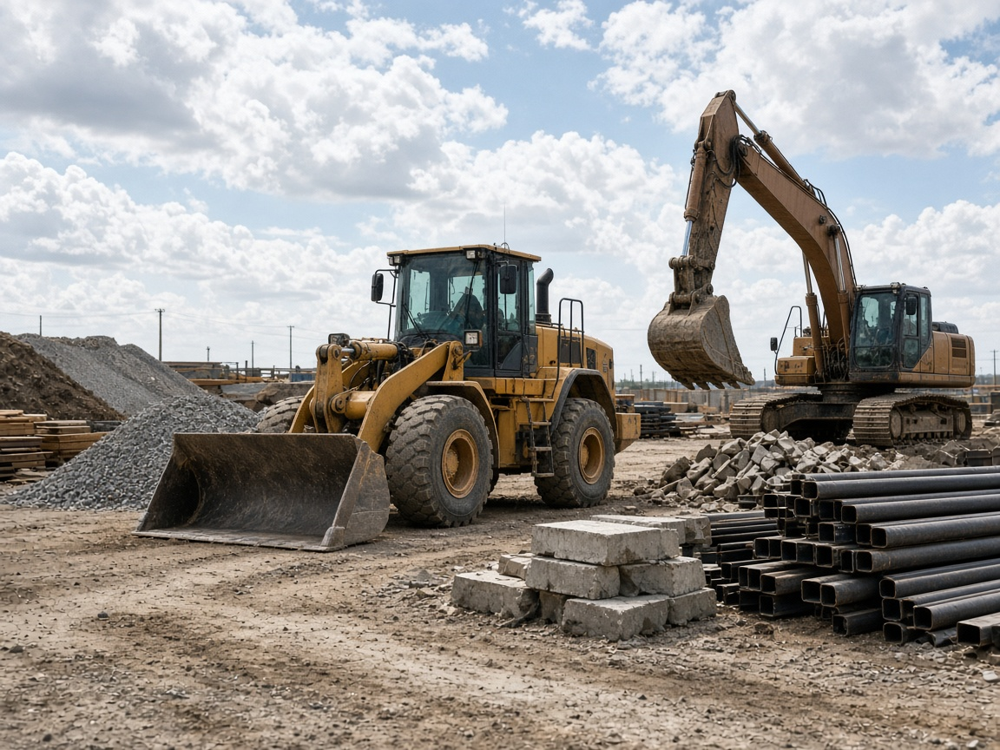

Lavori
Le imprese in piazza hanno bisogno di te. Arrivi tu, in zona.

Fornitore
Se entri nel mondo AncheCasa, le imprese della rete ti cercano. Materiali, mezzi, noleggio. Un solo albo, tre modi: vendita, noleggio, o entrambi.
Candidati all’alboLe imprese in piazza hanno bisogno di te. Arrivi tu, in zona.
Un solo ingresso. Scegli come lavori: vendi, noleggi, o entrambi.
Non una vetrina aperta. Una candidatura, poi la rete.
Stessa piazza delle imprese. Tu ci porti materiali e mezzi.
Chi cerca legno, mezzi, impianti in una zona arriva a chi li ha. Non a tutta Italia.
General contractor, artigiani, hotel, industria. Chi compra è già in AncheCasa.
Se vendi, se noleggi, o fai entrambe le cose. Un ingresso solo, la stessa rete.
Ti mette di fronte a chi ha bisogno di quello che hai tu.
Un cantiere che cerca mezzi, un hotel che cerca forniture, un’impresa che cerca materiale in zona. Tu sei in albo. Loro ti trovano.

Non due profili. Un ingresso all’albo, il modo in cui lavori, e la rete che ti porta le richieste giuste.
Ragione sociale, modo, zona. Poi i lavori della rete.
Candidati all’albo